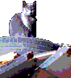
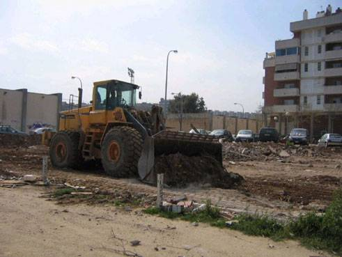
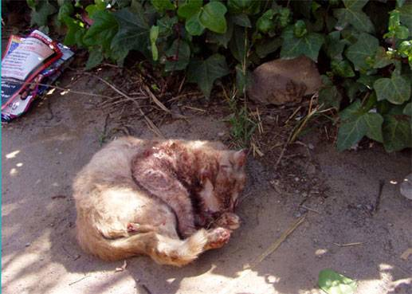
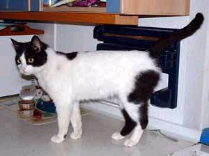

|
Presa de pèl de l'Ajuntament de BCN ? |
|  | El
28 de Març, representants de l'administració van comunicar a l'Associació
SOS GATS l'intenció del 'districte' de proporcionar lloc i mitjans per
a re-situar els gats de les vies de l'AVE. Doncs bé, falten 20 dies per a que entrin les màquines, acabo de parlar amb la gent de SOS GATS i m'informen de que, a hores d'ara, no hi ha cap acord amb cap protectora ni lloc decidit per resituar els gats. |
| Com
que, inclús en el cas de que es comencés ara mateix la recollida dels animals,
no hi hauria temps de capturar-ne un número important, si les obres comencen segons
el previst, es produïrà una massacre com la de Mercat Nou però corretgida
i augmentada. Aquells que se sentin atrets per l'espectacle de la sang, no els caldrà anar a la Monumental: Dintre de pocs dies el tindràn gratis si s'acosten a les obres de les vies de RENFE. No podem confirmar, però, de moment, si als treballadors de les obres els hi faràn posar "traje de lusses" . Presa de pel de l'Ajuntament de Barcelona per a desmobilitzar els veïns amb vistes a les eleccions ? Sant Andreu de Palomar, 8 de maig 2007 |
 |  |  |  |